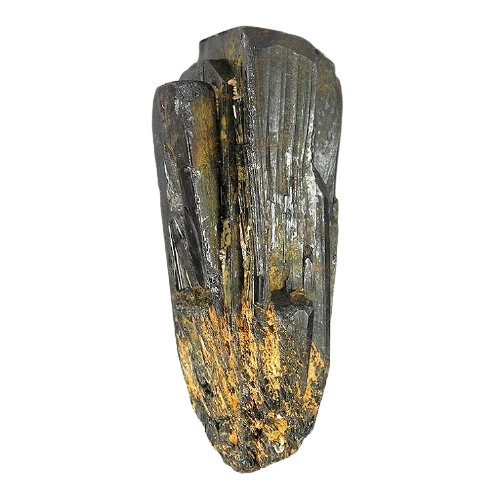

Blood in the mobile
Coltan
Coltan is een mineraal wat essentieel is voor de techindustrie, het geleidt erg goed en wordt vooral gebruikt voor printplaten en batterijen. Congo heeft naar schatting 80% van de coltan vooraad in zijn grond. De Coltanindustrie is miljarden waard. De Congoleese bevolking ziet hier echter weinig van terug.
De meeste mijnen in Congo zijn in handen van rebellengroepen, die de mijnwerkers uitbuiten en intimideren om zo goedkope mineralen te bemachtigen. Die worden vervolgens via buurlanden verder verkocht.